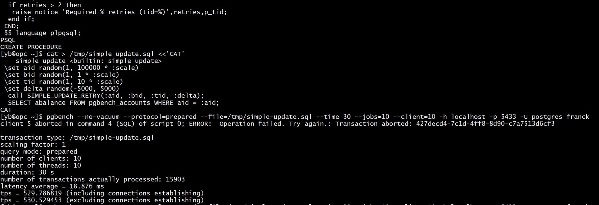
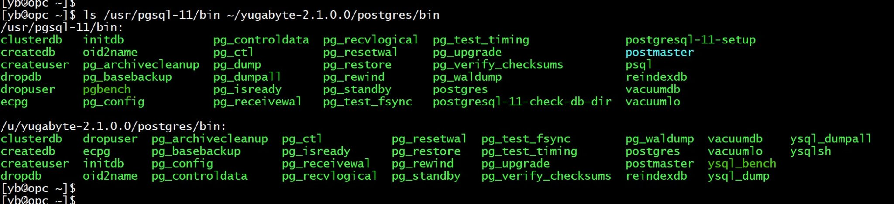
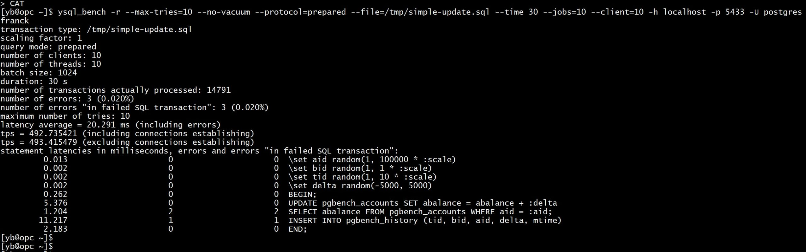
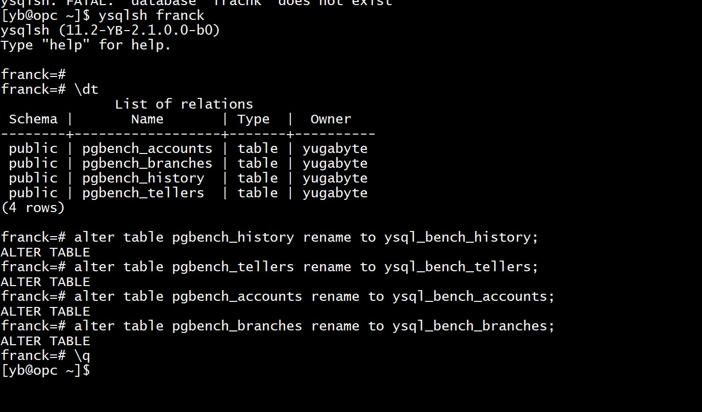
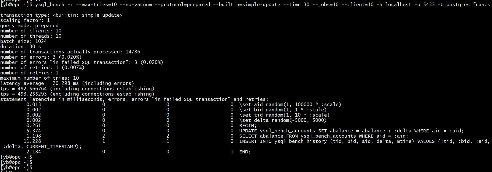
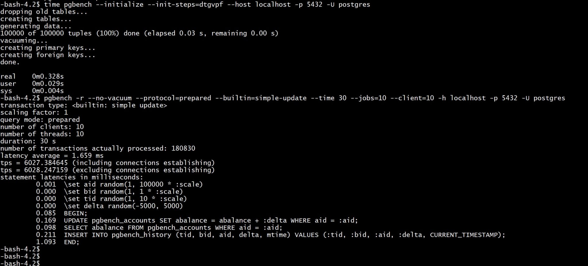
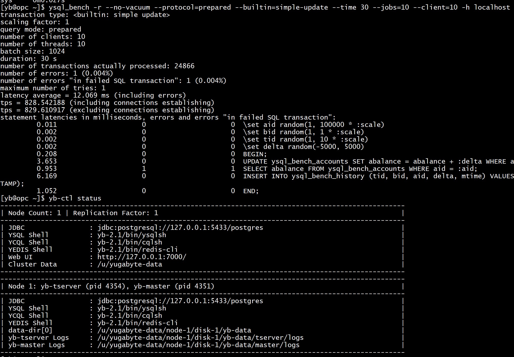

This was first published on https://www.dbi-services.com/blog/ysql_bench/ (2020-03-09)
Republishing here for new followers. The content is related to the versions available at the publication date.
.
This follows the previous post on testing YugaByteDB 2.1 performance with pgbench: https://www.dbi-services.com/blog/yugabytedb-2-1/
A distributed database needs to reduce inter-node synchronization latency and then replaces two-phase pessimistic locking by optimistic concurrency control in many places. This means more serialization errors where a transaction may have to be re-tried. But the PostgreSQL pgbench does not have this possibility and this makes benchmarking distributed database very hard. For example when CERN tested CoackroachDB the conclusion was: “comparative benchmarking of CockroachDB was not possible with the current tools used”.
In a previous blog post my workaround for this was to implement the retry in a PL/pgSQL procedure.
Here is the PL/pgSQL procedure:
ysqlsh franck <10 then
raise notice 'Give Up after % retries. tid=%',retries,p_tid;
raise;
end if;
-- continue the retry loop
end;
retries=retries+1;
end loop;
commit;
if retries > 2 then
raise notice 'Required % retries (tid=%)',retries,p_tid;
end if;
END;
$ language plpgsql;
PSQL
Here is the code to call it (same functionality as the “simple update” builtin):
cat > /tmp/simple-update.sql <<'CAT'
-- simple-update
\set aid random(1, 100000 * :scale)
\set bid random(1, 1 * :scale)
\set tid random(1, 10 * :scale)
\set delta random(-5000, 5000)
call SIMPLE_UPDATE_RETRY(:aid, :bid, :tid, :delta);
SELECT abalance FROM pgbench_accounts WHERE aid = :aid;
CAT
And how I run it for 30 seconds:
pgbench --no-vacuum --protocol=prepared --file=/tmp/simple-update.sql --time 30 --jobs=10 --client=10 -h localhost -p 5433 -U postgres franck

As I mentioned in my blog post, some serialization errors can still happen because of the limitations in PostgreSQL transaction control in procedures: I cannot retry the errors encountered at commit. This has been raised in the PostgreSQL hackers’s list: https://www.postgresql.org/message-id/flat/54C2FEA5-86FF-4A3C-A84B-4470A6998ACA%40thebuild.com#5a5a575ed5451603c906ba3167d043a1
Around the same time when I came with the PL/pgSQL workaround, YugabyteDB has implemented the mentioned patch in their fork of the postgres code: https://github.com/yugabyte/yugabyte-db/commit/af25ba570e11c59e41a1243126ff9f9edae9d422, which is a much better solution. Adding a patch to the community PostgreSQL is hard because this database engine is widely used and they must be conservative to ensure stability. That’s different for a startup company building a new database engine. And what’s awesome with YugaByteDB is that their fork is Open Source and their work can then easily be given back to the community. What YugaByteDB is improving in PostgreSQL is public, documented and open-source. And, good news, this postgres fork is shipped, with all tools, in the YugaByteDB distribution. Did you see in the previous post that I’ve set my PATH with ~/yugabyte-2.1.0.0/postgresql/bin in addition to ~/yugabyte-2.1.0.0/bin? This is where you find them, with the command line tools renamed. ysql_bench is the YugaByteDB version of pgBench. Here is a comparison of the community PostgreSQL and the one compiled with YugaByteDB:

The YugaByteDB version of pgbench has the following differences in version 2.1:
To work on the same table names, I continue with a script file:
cat > /tmp/simple-update.sql <<'CAT' -- simple-update
\set aid random(1, 100000 * :scale)
\set bid random(1, 1 * :scale)
\set tid random(1, 10 * :scale)
\set delta random(-5000, 5000)
BEGIN;
UPDATE pgbench_accounts SET abalance = abalance + :delta
WHERE aid = :aid;
SELECT abalance FROM pgbench_accounts WHERE aid = :aid;
INSERT INTO pgbench_history (tid, bid, aid, delta, mtime)
VALUES (:tid, :bid, :aid, :delta, CURRENT_TIMESTAMP);
END;
CAT
and I run with a “max-tries” settings and “-r” to report the number of retries:
ysql_bench -r --max-tries=10 --no-vacuum --protocol=prepared --file=/tmp/simple-update.sql --time 30 --jobs=10 --client=10 -h localhost -p 5433 -U postgres franck

That is 493 transactions per second. Do not compare with the PL/pgSQL version because here we have more client-server roundtrips.
In order to validate that I have the same result with the builtin script, I run it after renaming the tables because the YugaByte builtin scripts expect ysql_bench_% tables:

ysql_bench -r --max-tries=10 --no-vacuum --protocol=prepared --builtin=simple-update --time 30 --jobs=10 --client=10 -h localhost -p 5433 -U postgres franck

We are in still about 493 transactions per second here.
Of course, those numbers are far from what is possible with a monolithic database. The distributed architecture, the cross-shard foreign key validation, the replication to other nodes, have a huge overhead when implemented as remote procedure calls. When you scale-up within one server without the need to scale out, the throughput is higher with the community PostgreSQL:
sudo su - postgres
pg_ctl start
time pgbench --initialize --init-steps=dtgvpf --host localhost -p 5432 -U postgres
pgbench -r --no-vacuum --protocol=prepared --builtin=simple-update --time 30 --jobs=10 --client=10 -h localhost -p 5432 -U postgres

The advantage of a distributed database comes with the possibility to scale out to multiple servers, data centers and even regions. Note that I had no replication with the PostgreSQL test above and running YugaByteDB with no replication doubles the throughput that I had with replication factor 3:

So, there’s no fair comparison possible. Just use what you need: monolith to speed-up, or distributed to scale-out.
The big advantage of YugaByteDB is that the YSQL API is more than just compatibility with PostgreSQL like what CockroachDB does. YugaByte re-uses the PostgreSQL upper layer. Then an application built for a PostgreSQL database with the best one-node performance can scale-out without changing the application when moving to YugaByteDB. And vice-versa. This looks similar to what Amazon is doing with AWS Aurora except that Aurora runs only on AWS but YugaByteDB is open-source and can run anywhere.
There are many comparative benchmarks published but I think that being able to use pgbench is very important to compare a specific workload between PostgreSQL and YugabyteDB in order to make the right deployment decisions. My goal was also to emphasize the need to have a good exception handling strategy in your applications, with retry possibility.